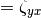
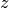
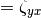
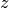
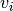
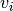
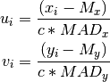

biweight_midcovariance¶
-
astropy.stats.biweight_midcovariance(data, c=9.0, M=None, modify_sample_size=False)[source] [edit on github]¶ Compute the biweight midcovariance between pairs of multiple variables.
The biweight midcovariance is a robust and resistant estimator of the covariance between two variables.
This function computes the biweight midcovariance between all pairs of the input variables (rows) in the input data. The output array will have a shape of (N_variables, N_variables). The diagonal elements will be the biweight midvariances of each input variable (see
biweight_midvariance()). The off-diagonal elements will be the biweight midcovariances between each pair of input variables.For example, if the input array
datacontains three variables (rows)x,y, andz, the outputndarraymidcovariance matrix will be:where ,
 , and
are the biweight midvariances of each variable. The biweight
midcovariance between
, and
are the biweight midvariances of each variable. The biweight
midcovariance between  and
and  is
is  (). The biweight midcovariance between
and  is (). The biweight midcovariance between and
is ().
(). The biweight midcovariance between
and  is (). The biweight midcovariance between and
is ().The biweight midcovariance between two variables
and
is given by:where and are the medians (or the input locations) of the two variables and
 and  are
given by:
and  are
given by:
where
 is the biweight tuning constant and
and are the median absolute deviation of the
and variables. The biweight midvariance tuning
constant
is the biweight tuning constant and
and are the median absolute deviation of the
and variables. The biweight midvariance tuning
constant cis typically 9.0 (the default).For the standard definition of biweight midcovariance
 is
the total number of observations of each variable. That definition
is used if
is
the total number of observations of each variable. That definition
is used if modify_sample_sizeisFalse, which is the default.However, if
modify_sample_size = True, then is the
number of observations for which and  , i.e.
, i.e.which results in a value closer to the true variance for small sample sizes or for a large number of rejected values.
Parameters: data : 2D or 1D array-like
Input data either as a 2D or 1D array. For a 2D array, it should have a shape (N_variables, N_observations). A 1D array may be input for observations of a single variable, in which case the biweight midvariance will be calculated (no covariance). Each row of
datarepresents a variable, and each column a single observation of all those variables (same as thenumpy.covconvention).c : float, optional
Tuning constant for the biweight estimator (default = 9.0).
M : float or 1D array-like, optional
The location estimate of each variable, either as a scalar or array. If
Mis an array, then its must be a 1D array containing the location estimate of each row (i.e.a.ndimelements). IfMis a scalar value, then its value will be used for each variable (row). IfNone(default), then the median of each variable (row) will be used.modify_sample_size : bool, optional
If
False(default), then the sample size used is the total number of observations of each variable, which follows the standard definition of biweight midcovariance. IfTrue, then the sample size is reduced to correct for any rejected values (see formula above), which results in a value closer to the true covariance for small sample sizes or for a large number of rejected values.Returns: biweight_midcovariance :
ndarrayA 2D array representing the biweight midcovariances between each pair of the variables (rows) in the input array. The output array will have a shape of (N_variables, N_variables). The diagonal elements will be the biweight midvariances of each input variable. The off-diagonal elements will be the biweight midcovariances between each pair of input variables.
References
[R59] http://www.itl.nist.gov/div898/software/dataplot/refman2/auxillar/biwmidc.htm Examples
Compute the biweight midcovariance between two random variables:
>>> import numpy as np >>> from astropy.stats import biweight_midcovariance >>> # Generate two random variables x and y >>> rng = np.random.RandomState(1) >>> x = rng.normal(0, 1, 200) >>> y = rng.normal(0, 3, 200) >>> # Introduce an obvious outlier >>> x[0] = 30.0 >>> # Calculate the biweight midcovariances between x and y >>> bicov = biweight_midcovariance([x, y]) >>> print(bicov) [[ 0.82483155 -0.18961219] [-0.18961219 9.80265764]] >>> # Print standard deviation estimates >>> print(np.sqrt(bicov.diagonal())) [ 0.90820237 3.13091961]